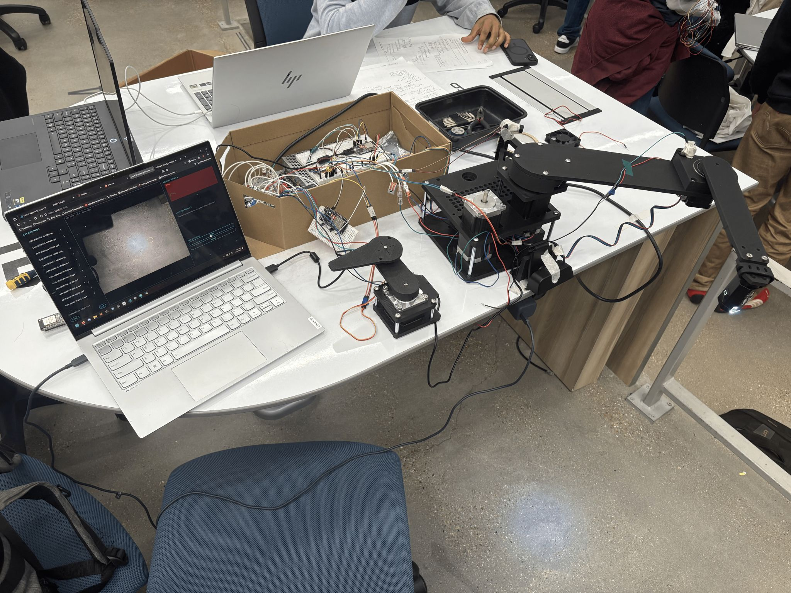
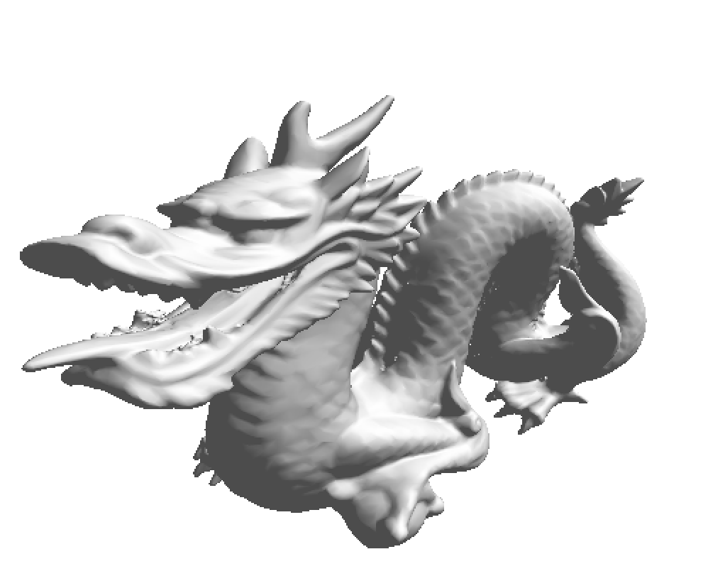
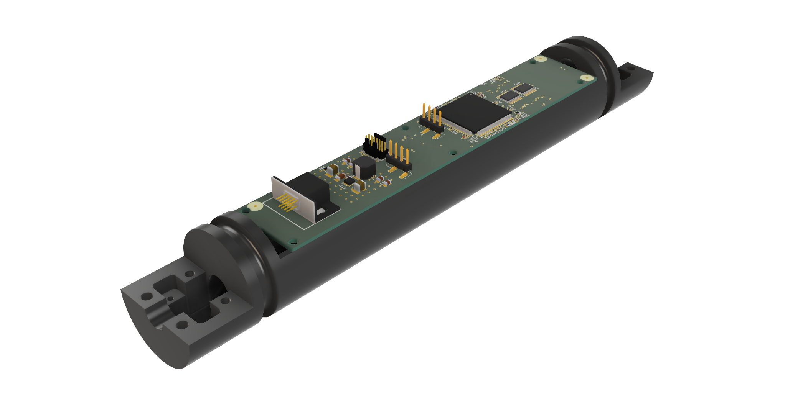
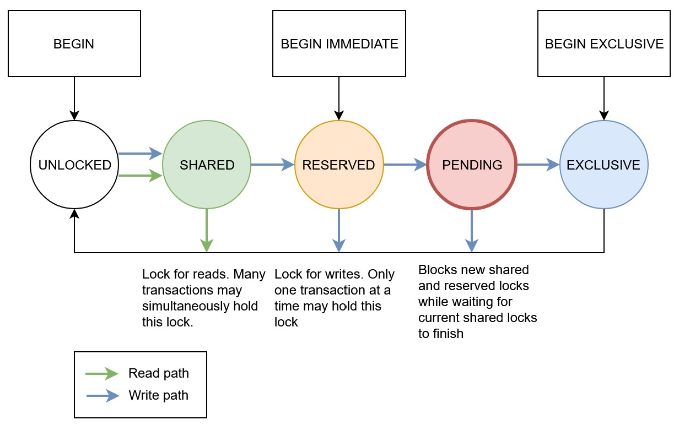
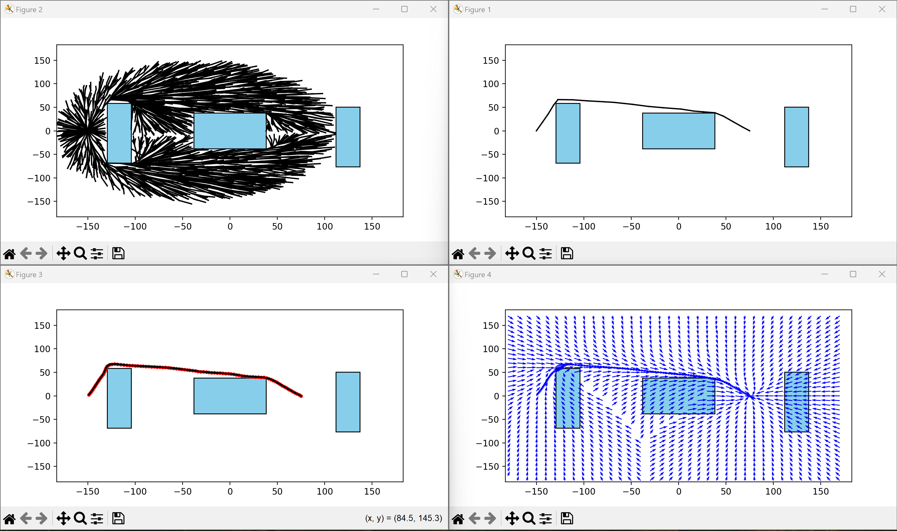
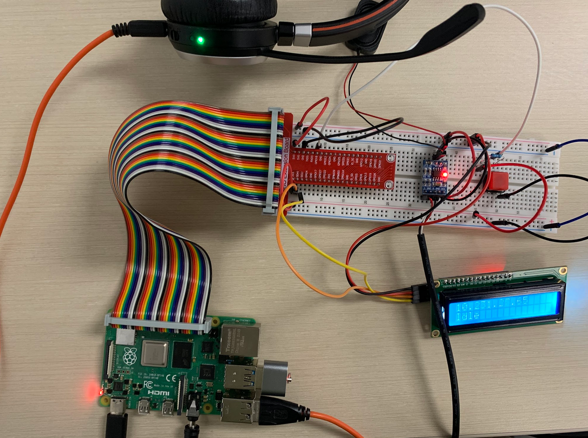
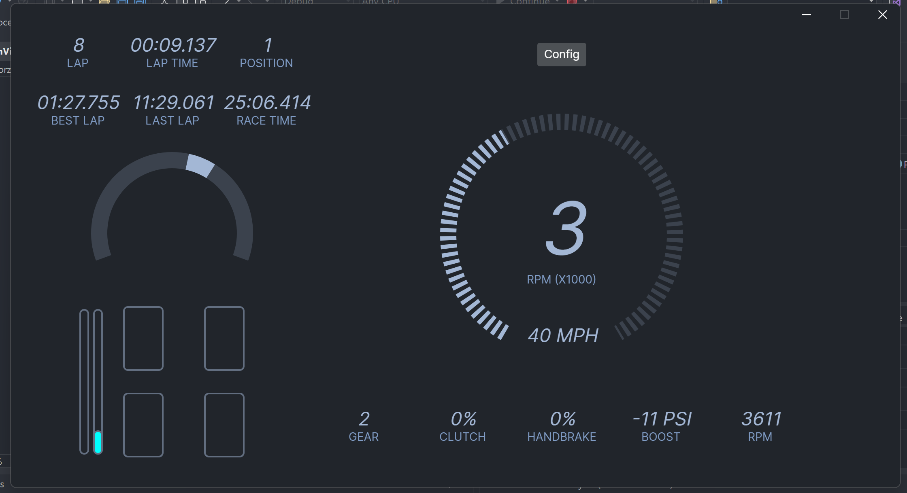
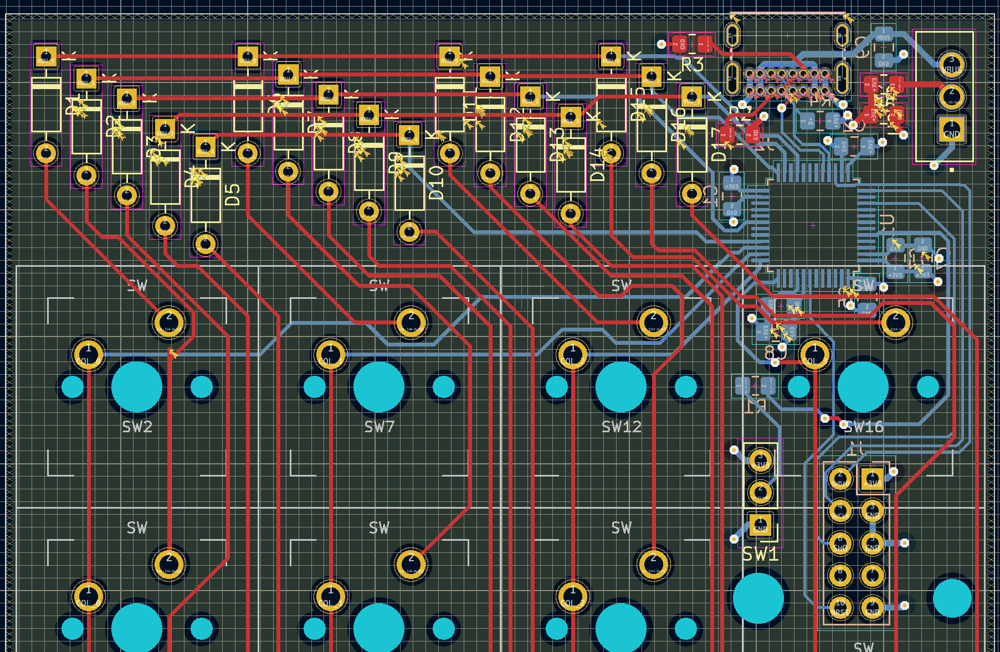

Automated OR Lighting Arm
ESP32
C++
Python
OpenCV
Flask
Built a robotic arm for TAMUHACK '26 for automatic surgical light positioning.
View Code →Embedded & robotics engineer building real-time systems for satellites and robots.
Computer Engineering '29 @ Texas A&M University
Command & Data Handling Engineer @ AggieSat Lab
Electronics Engineering Intern @ Aggies Create
Undergraduate Researcher @ AGGIES Lab
Howdy! I’m a computer engineering student at Texas A&M who likes working on embedded systems, robotics, and the software that ties them together. Most of my recent work has been on satellite payload software at AggieSat Lab, a Measure‑While‑Drilling embedded system at Aggies Create, cybersecurity automation research at AGGIES Lab, and motion planning and autonomy for competition robots. I enjoy taking something that’s half working and poking at it until it’s reliable enough that I don’t have to think about it anymore.
View selected projects ↓ View full experience →
Built a robotic arm for TAMUHACK '26 for automatic surgical light positioning.
View Code →
Developing a GLSL-like programming language and 3d-rendering pipeline targeting the CPU.

Designed a PCB and writing filtering algorithms for subsurface orientation sensing on drills.

Developing a NoSQL key-value + time-series database for embedded Linux with built-in fault tolerance (A/B copies, checksums, redundancy) and a full concurrency model.
View Code →
Built a real-time autonomous path planner for sparse obstacle fields.
View Code →
Built a voice-activated chatbot with Gemma-2B on a Raspberry Pi.
View Code →
Built a desktop telemetry dashboard for Forza Motorsport for in-race monitoring and analysis over UDP.
View Code →
Designed a 10-key numpad PCB in KiCad with an STM32 and USB-C.
I'm developing inter-process communication software for satellite payloads at AggieSat Lab. I design and implement POSIX IPC mechanisms like shared memory, ring buffers, and mutex/semaphore synchronization to reliably move data between onboard processes and support real-time operations.
At Aggies Create, I'm working on a Measure-While-Drilling embedded system for sensing orientation underground in tough, high-vibration environments. I handle PCB design and validation, routing high-density STM32 and external Flash interfaces to meet signal integrity requirements. I also maintain a hardware test fixture using Arduino, stepper motors, and vibration motors. On the firmware side, I implement filtering and estimation algorithms like low-pass filters and an Extended Kalman Filter on STM32 to get stable pose estimates from noisy sensor data.